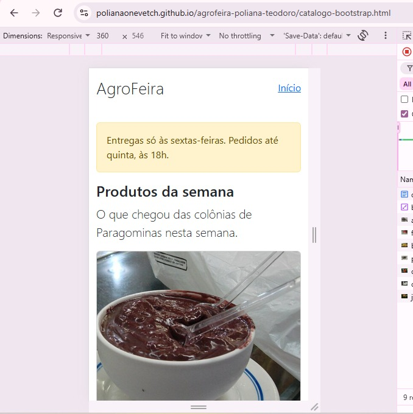
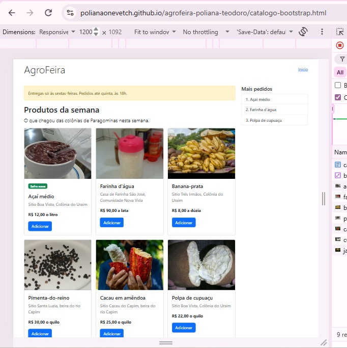
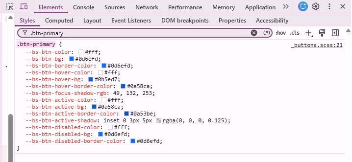
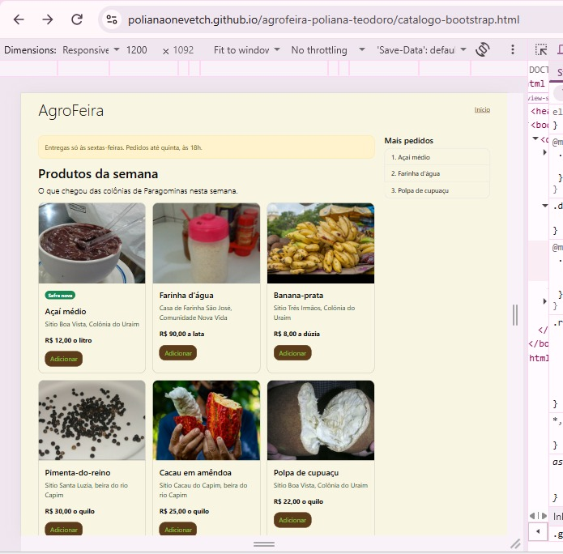
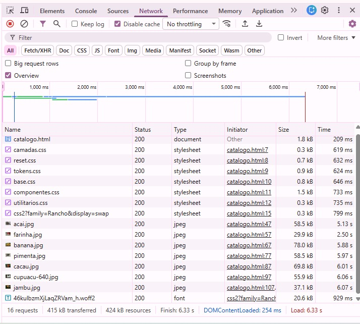
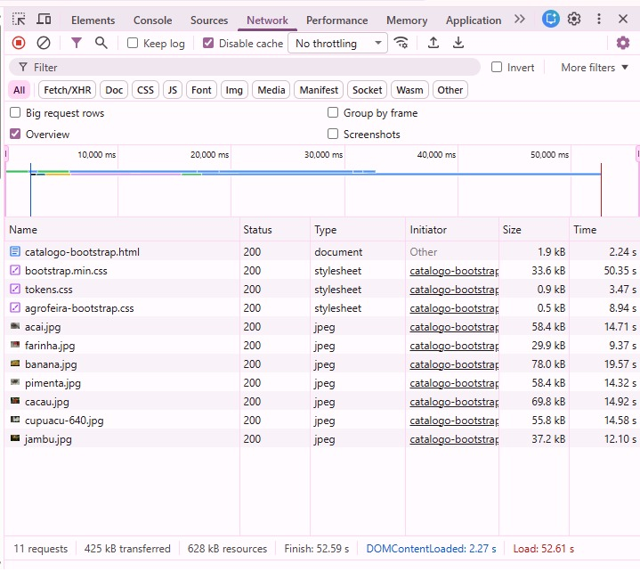
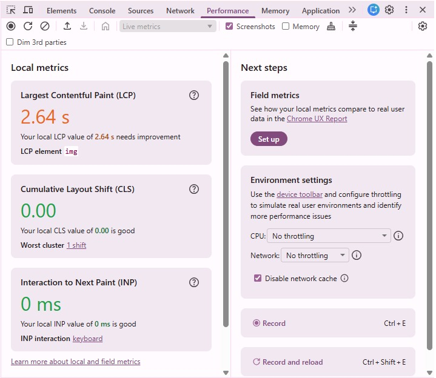
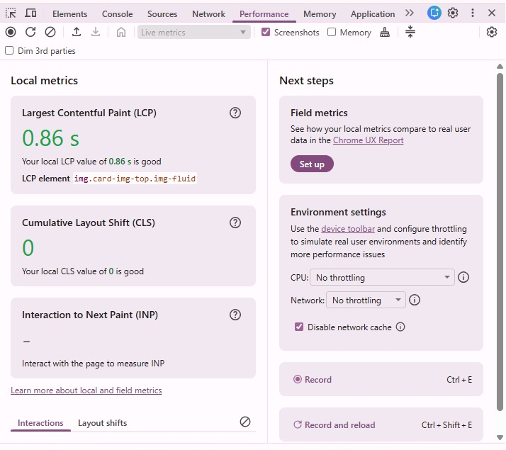

Atividade 05
- Nome: Poliana Teodoro da Silva Onevetch
- Matrícula: 2024003010
- Endereço do Repositório: https://github.com/PolianaOnevetch/agrofeira-poliana-teodoro
- Endereço Público do Site: https://polianaonevetch.github.io/agrofeira-poliana-teodoro/
- Catálogo autoral: https://polianaonevetch.github.io/agrofeira-poliana-teodoro/catalogo.html
- Catálogo Bootstrap: https://polianaonevetch.github.io/agrofeira-poliana-teodoro/catalogo-bootstrap.html
O catálogo em três larguras


360 px: Cartões em 1 coluna, a lista "Mais pedidos" não aparece e o resultado do teste de rolagem é false.
768 px: Cartões em 2 colunas, a lista "Mais pedidos" não aparece e o resultado do teste de rolagem é false.
1200 px: Cartões em 3 colunas, a lista "Mais pedidos" aparece e o resultado do teste de rolagem é false.
1. A customização
| Variável Alterada | Valor | Por quê |
|---|---|---|
| --bs-body-bg | var(--cor-fundo) (#F9F5E3) | Define a cor de fundo da página de acordo com o token já existente. |
| --bs-body-color | var(--cor-texto) (#0a0a0a) | Define a cor principal dos textos da página, usando o token de texto. |
| --bs-secondary-color | var(--cor-texto-suave) (#2A4A2A) | Define a cor dos textos secundários. |
| --bs-body-font-family | var(--fonte-texto) (system-ui, sans-serif) | Usa a família de fontes já definida nos tokens. |
| --bs-border-radius | var(--raio) (15px) | Arrendonda as bordas dos itens que a usam, de acordo com a medida já definida. |
| --bs-link-color-rgb | var(--cor-marca-rgb) (92, 59, 26) | Define a cor dos links no estado normal. |
| --bs-link-hover-color-rgb | var(--cor-marca-forte-rgb) (61, 38, 15) | Define a cor dos links quando o ponteiro passa por cima. |
| --bs-btn-bg | var(--cor-marca) (#5C3B1A) | Substitui a cor padrão azul dos botões pela cor definida no token. |
| --bs-btn-border-color | var(--cor-marca) (#5C3B1A) | Altera a borda para ficar da mesma cor do fundo do botão. |
| --bs-btn-color | var(--cor-sobre-marca) (#8BC34A) | Altera a cor do texto dos botões para contrastar com o fundo do botão. |
| --bs-btn-hover-color | var(--cor-sobre-marca) (#8BC34A) | Define a cor do texto dos botões quando o ponteiro passa por cima. |
| --bs-btn-hover-bg | var(--cor-marca-forte) (#3D260F) | Define a cor de fundo dos botões quando o ponteiro passa por cima. |
| --bs-btn-hover-border-color | var(--cor-marca-forte) (#3D260F) | Altera a borda para ficar da mesma cor do fundo do botão quando o ponteiro está em cima. |
| --bs-btn-active-color | var(--cor-sobre-marca) (#8BC34A) | Define a cor do texto do botão quando ele está ativo. |
| --bs-btn-active-bg | var(--cor-marca-forte) (#3D260F) | Define a cor do fundo do botão quando ele está ativo. |
| --bs-btn-active-border-color | var(--cor-marca-forte) (#3D260F) | Altera a borda para ficar da mesma cor do fundo do botão quando ele está ativo. |
Por que --bs-primary não muda o botão?
Ao alterar somente a variável --bs-primary no :root não altera o fundo do botão, porque, no CSS do Bootstrap, a regra .btn-primary define a variável --bs-btn-bg com o valor fixo #0d6efd, em vez de utilizar var(--bs-primary). Assim, o botão lê diretamente --bs-btn-bg para definir seu fundo.

Antes e depois
Na captura 2 temos o fundo da página e dos cartões branco, enquanto os botões são azuis com o texto branco e links são azuis e todos os cantos são pouco arredondados. Já na captura 4, a cor do fundo muda, os botões passam a ser marrom com o texto verde, os links agora são marrons também e todos os componentes tem a borda arredondada.
O Fundo da página e a cor de texto: No fundo da página, a variável --bs-body-bg passou de #fff para #f9f5e3, alterando o fundo do catálogo. Já na cor do texto, a variável --bs-body-color passou de #212529 para #0a0a0a, alterando a cor principal dos textos.
O Botão Adicionar: Os botões, em estado normal foram da cor #0d6efd para a cor #5C3B1A, e em estado de hover, foram da cor #0b5ed7 para a cor #3D260F.
O link "Início": O link no estado normal passa da cor 13, 110, 253 para a cor 92, 59, 26 e quando o ponteiro está em cima vai da cor 10, 88, 202 para a cor 61, 38, 15.
Arredondamento: A variável --bs-border-radius passou de 0.375rem para var(--raio) que corresponde a 15 px, alterando os cantos dos cartões, do alerta e dos botões.

2. As medições
As medições foram realizadas no Google Chrome, utilizando os endereços públicos das páginas catalogo.html e catalogo-bootstrap.html. Para verificar a transferência de dados, foi utilizada a aba Network com a opção Disable cache marcada. Para medir o LCP, usei a aba Performance com a opção Disable network cache marcada. As duas páginas foram testadas com as mesmas dimensões, de 651 x 633 pixels, conforme os valores verificados no Console.
| Critério | Autoral | Bootstrap |
|---|---|---|
| CSS transferido | 4,9kB (Google Fonts: 0,3kB) | 35kB (bootstrap.min.css: 33,6kB + tokens.css: 0,9kB + agrofeira-bootstrap.css: 0,5kB) |
| fontes | 20,6kB | 0,0kB |
| imagens | 388kB | 388kB |
| documento | 1,8kB | 1,9kB |
| total transferido | 415kB (não aparece a linha favicon.ico) | 425kB (não aparece a linha favicon.ico) |
| LCP (o valor do meio) | 6,34 s (21,29 s; 6,34 s; 2,08 s; 7,56 s; 2,64 s) | 3,84 s (5,42 s; 3,34 s; 3,84 s; 5,68 s; 0,86 s) |
| linhas de CSS próprio | 1 + 44 + 62 + 106 + 228 + 3 = 444 | 62 + 22 = 84 |
| classes no cartão do açaí | 4 classes em 3 elementos | 14 classes em 8 elementos (com selo: 16 classes em 9 elementos) |




3. A leitura dos números
Os bytes: Conforme os dados das medições na tabela, o catálogo-bootstrap.html baixou 7,14 vezes mais que o catalogo.html (autoral) incluindo a folha do Google Fonts. Já sem ela a comparação passa a ser de 35 kB contra 4,6 kB, resultando 7,61 vezes mais que o catálogo autoral. O total transferido não representa apenas o peso do CSS. As duas páginas transferiram 388 kB de imagens, enquanto somente a versão autoral carregou a fonte do Google Fonts, com 20,6 kB. Por isso, mesmo com pouca diferença no total transferido (415 kB no catálogo autoral e 425 kB no catálogo Bootstrap), o peso das folhas de estilo é bastante diferente.
O LCP: O valor do meio das cinco medições foi de 6,34s no catálogo autoral e 3,84s no catálogo Bootstrap, uma diferença de 2,50s. No catálogo autoral, o menor valor foi de 2,08s e o maior foi de 21,29s, resultando em uma variação de 19,21s. No catálogo Bootstrap, o menor valor foi de 0,86s e o maior foi de 5,68s, com uma variação de 4,82s. Com isso, a diferença entre os valores do meio é menor que a variação observada nas duas páginas. Esses resultados mostram que o LCP variou entre as cargas e que o valor do meio foi menor na versão Bootstrap. Não é possível atribuir essa diferença só ao framework, por que o LCP mede o tempo até a apresentação do maior elemento visível da página e não apenas o desempenho do CSS. Além disso, as páginas possuem diferenças de conteúdo e de recursos carregados, somente a versão autoral utiliza a folha e a fonte do Google Fonts. Então, as medições permitem comparar os resultados obtidos nas condições dos testes, mas não dá pra afirmar que o Bootstrap tornou a página mais rápida.
As linhas e as classes: O catálogo autoral tem 444 linhas de CSS próprio, contra 84 na versão Bootstrap, mas os escopos são diferentes, o CSS autoral atende às cinco páginas do site, enquanto o CSS Bootstrap atende só o catálogo. Assim, componentes.css inclui regras de outras páginas, como as de avisos e busca. No cartão, o autoral utiliza 4 classes em 3 elementos e o Bootstrap, 14 classes em 8 elementos sem o selo e 16 classes em 9 elementos com ele. No autoral, mudanças visuais exigem alterar as regras do componente, já no Bootstrap, a customização utiliza variáveis e regras que adaptam os estilos do framework.
O que a medição não mostra: Os resultados não mostram quanto tempo foi necessário para desenvolver cada versão nem o esforço de manutenção futura. A contagem de linhas e classes também não mede diretamente a dificuldade de compreender, testar e manter o código, pois as duas versões possuem estruturas e responsabilidades diferentes. Além disso, o LCP mostra os valores de acordo com as condições que as medições foram realizadas e variam bastante entre as cargas. Como as páginas possuem diferenças de conteúdo e de recursos carregados, os resultados não isolam o efeito do bootstrap.
Controle e trabalho: Na versão autoral, o catalogo.html possui o link de pular, o menu, a barra de categorias, a container query do cartão e o seletor :has() para o foco, recursos que não aparecem no catalogo-bootstrap.html. Para implementá-los foi preciso escrever e ajustar regras próprias de CSS, o que permite maior controle sobre a navegação, a adaptação dos componentes e a acessibilidade. Mas o catálogo Bootstrap tem o aviso de entrega, a frase de abertura e o selo, que não estão na versão autoral. Assim, o Bootstrap reduz o CSS necessário para montar componentes prontos, mas exige conhecer sua estrutura de customização e a versão autoral pede mais código, mas oferece controle direto sobre as decisões visuais e funcionais.
4. Conclusão
A Agrofeira deve usar o Bootstrap nas páginas que precisam ser desenvolvidas rápido, porque precisa de menos esforço para fazer e usa menos linhas de CSS, como nesse caso usamos apenas 84 linhas. Mas não usaria o Bootstrap em páginas que precisam ser mais personalizáveis e acessíveis ou que exijam maior controle sobre os componentes, porque assim tem como implementar recursos específicos, mesmo que demande mais trabalho e mais linhas de CSS, como nesse caso, usamos 444 linhas.